What this module does
This module adds a Salon screen on top of the normal Odoo Point of Sale till. The person at the till gets one new button, Salon, that opens a board of today's appointments: who is booked, with which stylist, for which service, and whether they have paid. From the same screen the till can book an appointment for later, take a walk-in on the spot, and load a finished appointment straight onto the order for payment. Everything else about the till, the product screen, payment and receipts, is the Odoo Point of Sale you already know, with one addition: a paid salon order's receipt names the stylist and the service, not just the price.
This module has no appointment calendar, service catalogue or stylist records of its own. Those belong to WT Salon Management, a separate required module this one is a bridge on top of, not a replacement for.
| What this is | A bridge that brings the salon back office into the Odoo till. It adds no appointment system of its own; it puts WT Salon Management's appointments, services and stylists onto the POS order, the receipt and the commission. |
|---|---|
| What it requires | WT Salon Management. This module does nothing on a database that does not already have it installed and set up. |
| Who it is for | A salon already running on WT Salon Management whose front desk wants to take money at a till. |
| Who should buy something else | A spa or a business with no back office already in place should buy WT Spa and Salon POS instead, which is self contained with its own bookings, rooms and therapists. The two are not versions of one product and should not be installed on the same database. |
Before you start
You need Odoo 19 Community with Point of Sale and WT Salon Management both installed. This module adds nothing on its own without the second one; install it first.
Install with demo data on and WT Salon Management's own demo runs first, building a working example salon (Bloom & Blade Salon) with six stylists, twenty six customers and a service catalogue. This module's own demo data then books four of those same stylists and eight of those same customers through a week of real till sessions and paid orders, on top of that same salon, exactly what every screenshot in this guide shows. A production database normally installs without demo data, so your own till opens with nothing booked and you set it up using the steps below.
Here is that back office, so you see the whole system before you go looking for it on the till. These four screens belong to WT Salon Management, not to this module:

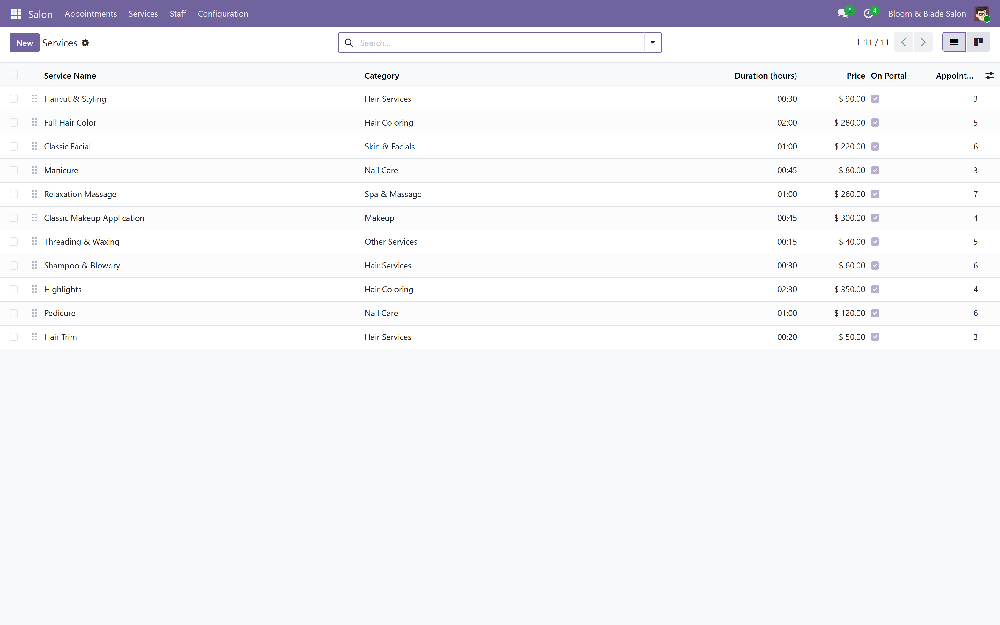
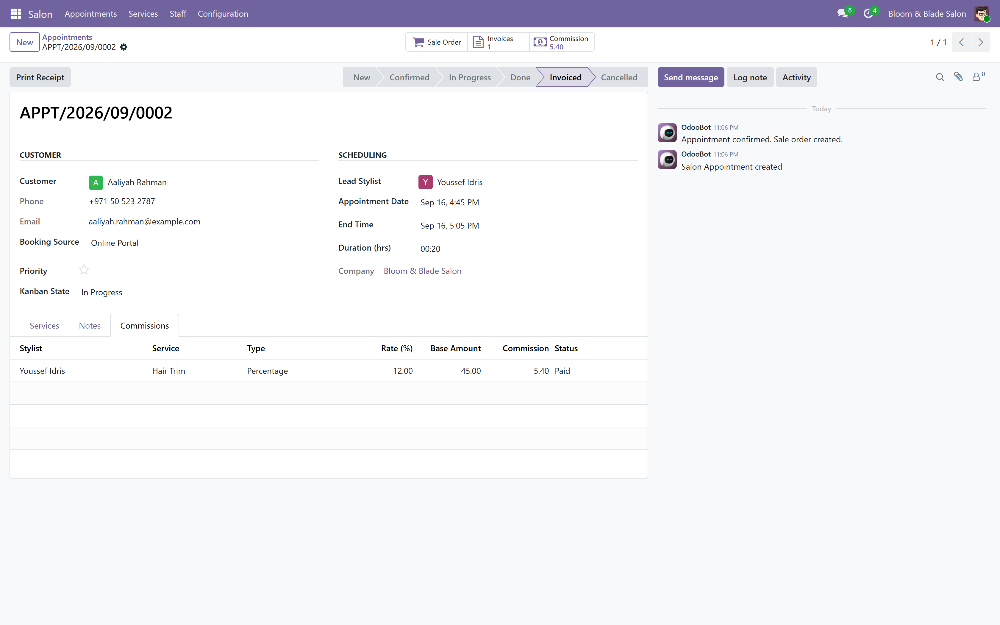
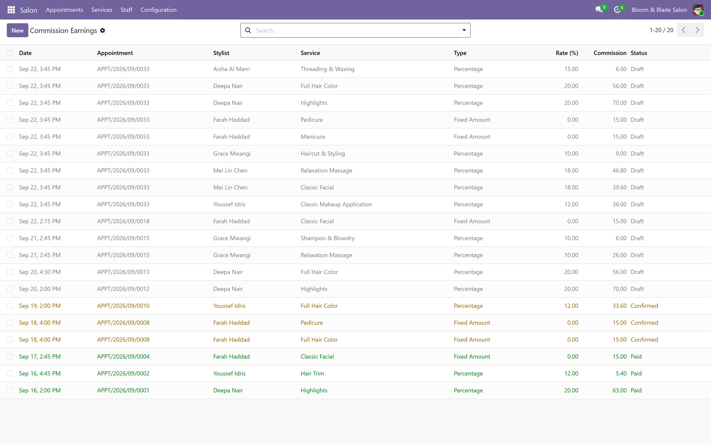
Turning on Salon Mode for a till
Every till (a "config" in Odoo) needs Salon Mode turned on before the Salon button appears on it. Open Point of Sale > Configuration > Point of Sale, open your till, and find the Salon Mode setting.
There is only one setting: a checkbox. Turning it on shows the Salon button on this till's navbar and lets it load WT Salon Management's service catalogue; turning it off hides the button and keeps the catalogue out of this till entirely, so a plain retail counter never shows a Salon button by accident.
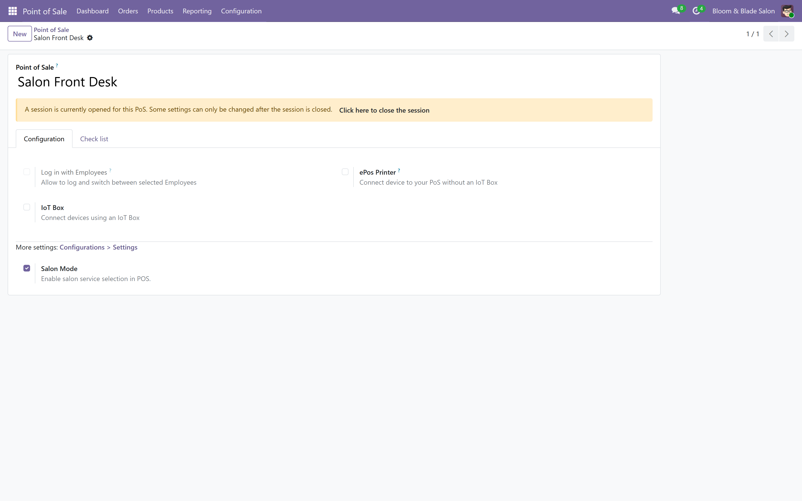
Opening the till
Open Point of Sale, find your till's card and press New Session or Continue Selling. Turning Salon Mode on adds nothing to opening a till; it only adds the Salon button described next, once the till's product screen is showing.
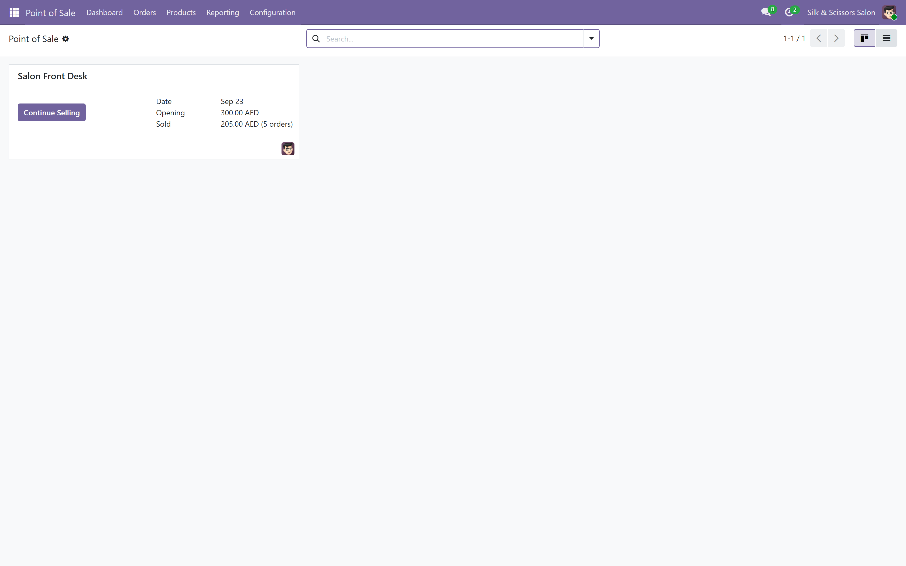
The Salon board
Look for the Salon button in the top bar and press it. This opens the Salon board as a full screen on top of the normal product screen.
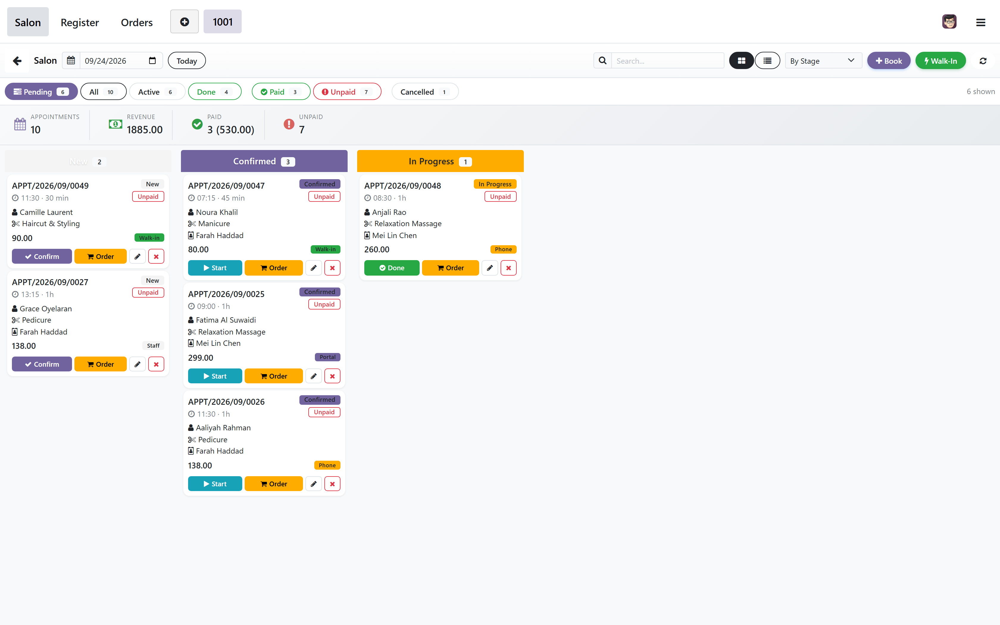
Booking an appointment for later
From the Salon board, press Book. Pick one or more services; the total price and duration update as you go. Pick a stylist, or leave Any selected; each stylist's chip shows how many appointments they already have today, so it is easy to spread the load. Search for the customer by name or phone, or press + New to add someone on the spot with just a name, then press Book Appointment.
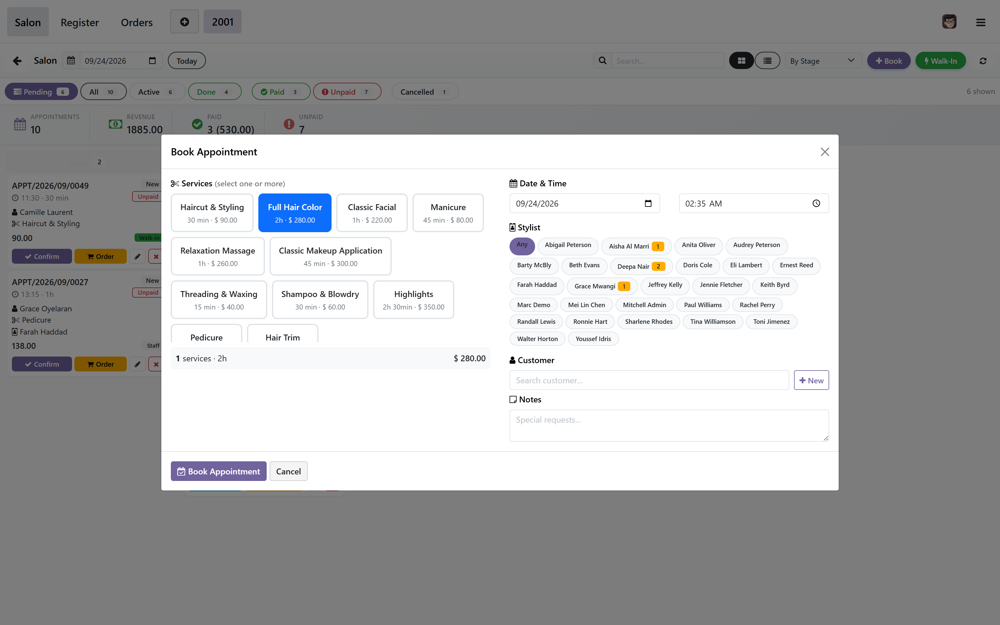
A customer walks in without a booking
From the Salon board, press Walk-In. Pick one service and press Select. This books the appointment as already arrived, source "Walk-in", and loads its service onto the current order at once, so the next step is straight to payment.
Loading a booking onto the order
An appointment whose service is finished but has not been rung up yet shows an Order button, on its card, in the list, and in the detail panel. Press it and every service line lands on the order with its price, the customer already attached, ready to pay. If an order for that appointment is already open, this switches to it instead of starting a duplicate.
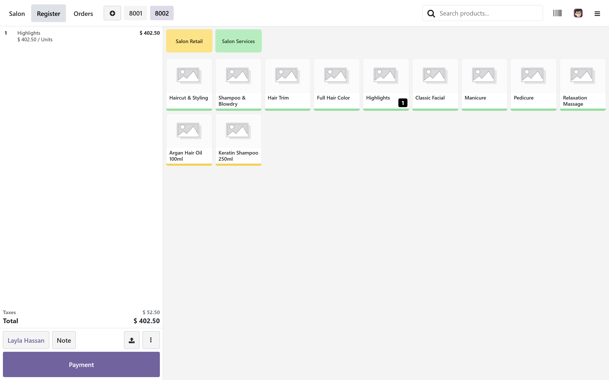
Taking payment
However the appointment reached the order, it is now an ordinary line on the Point of Sale order. Press Payment the same way you would for any sale, pick the payment method, and validate.
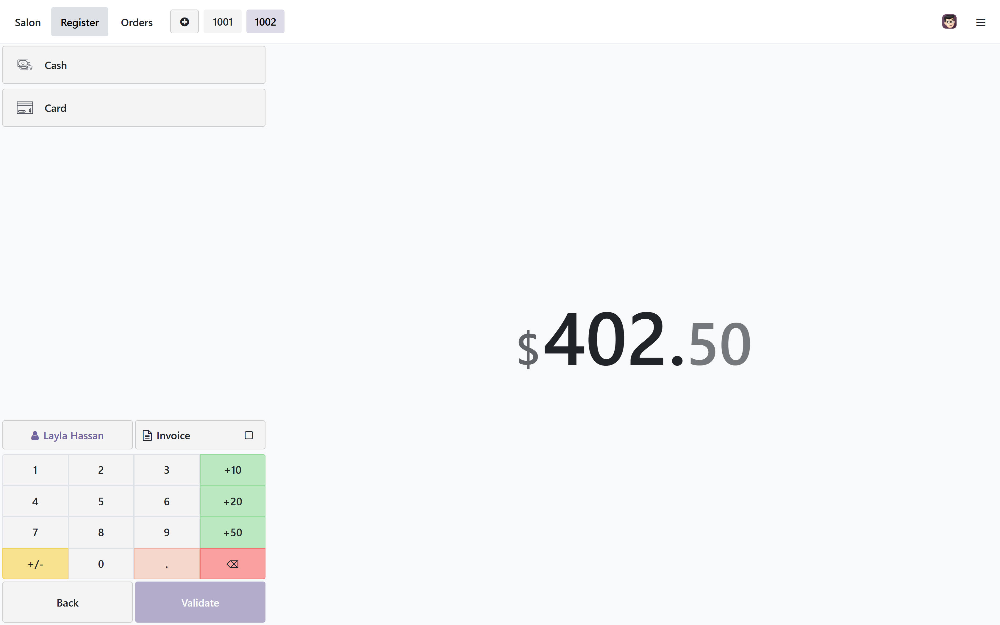
The receipt
When the sale is tied to an appointment, the receipt prints the appointment reference, the time, the service and the stylist above the footer, so the customer leaves with more than a product name and a price. This is the actual printed and emailed receipt, not only the on-screen preview. A sale with no linked appointment prints exactly the normal Odoo receipt.
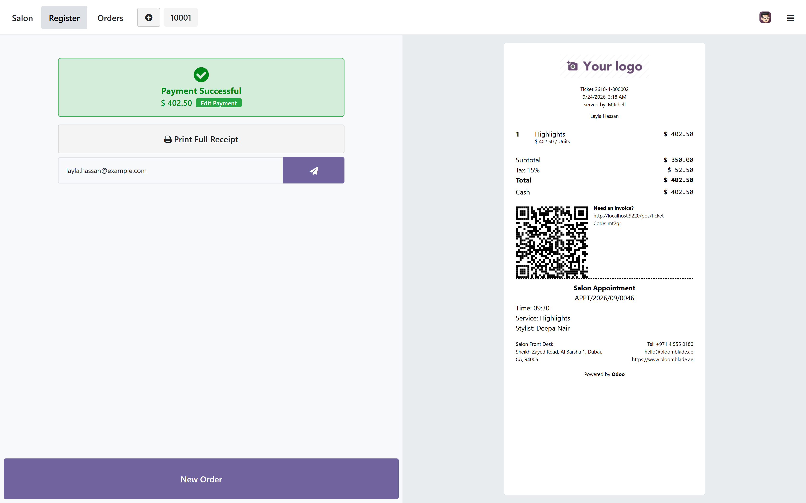
Refunding a salon sale
Refund a salon order the way you always refund a Point of Sale order, through the till itself. The moment the refund reaches the server, the appointment it was billed against is put back to Confirmed automatically, ready to be rebooked or rung up again; nothing about the refund itself is changed by this module.
Reopening an old order
Press Orders in the navbar to see every order in the current session. A salon-linked order carries a small badge next to the customer's name naming the service and the stylist, so a long list from a busy day is still readable at a glance, without opening each order to check.
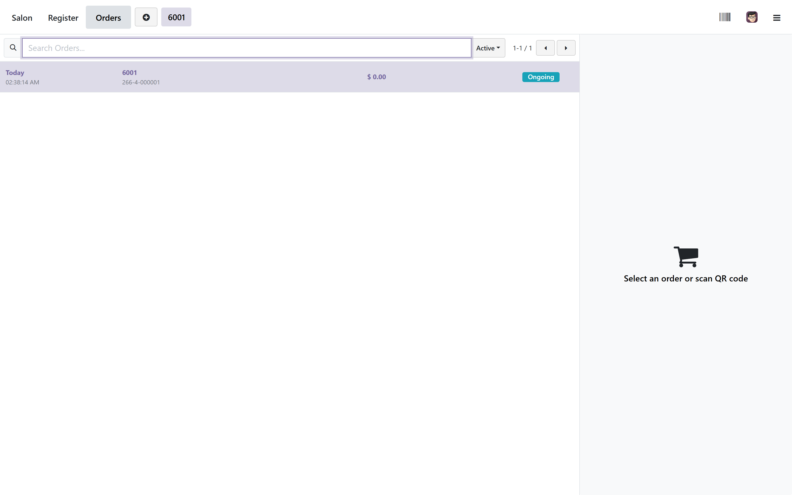
Customer history, on the spot
Open the detail panel of any appointment linked to a customer and their recent history loads underneath: total visits, total spent, their preferred stylist if one is set, and their last ten appointments with what was paid.
Closing the till and reading the day's figures
Close the till the way you always have: Close Register from the till, or from the backend session list. Every order and payment taken through the Salon board is a normal Point of Sale order underneath, so it appears in the session's totals like any other sale.
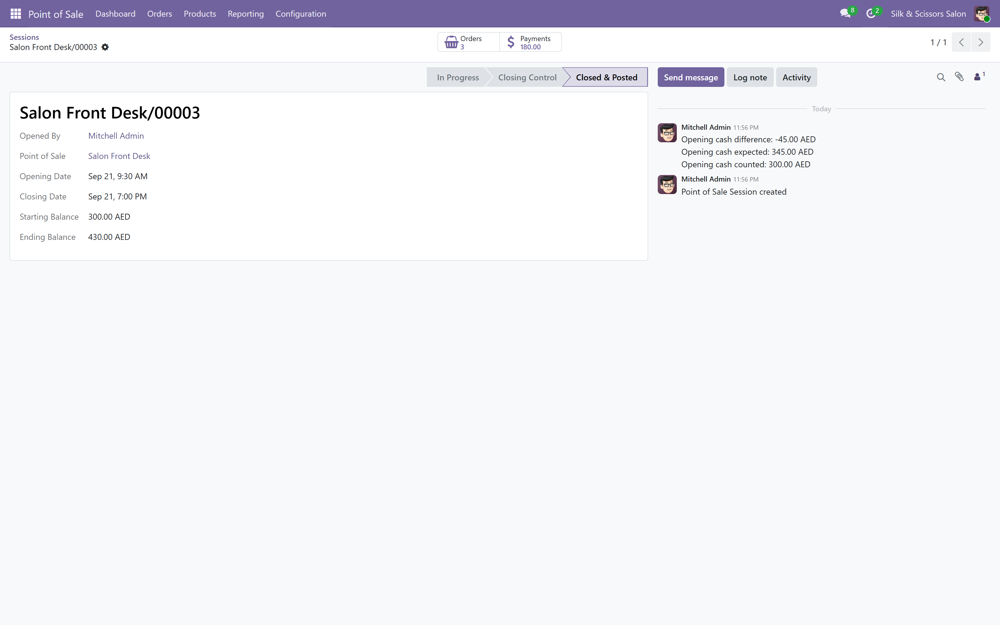
The backend Orders list (Point of Sale > Orders > Orders) carries the same story: Salon Service and Stylist are optional columns, shown by default. Open a single order and its form shows the linked Salon Appointment, Stylist and Salon Service, read only, right after the customer.
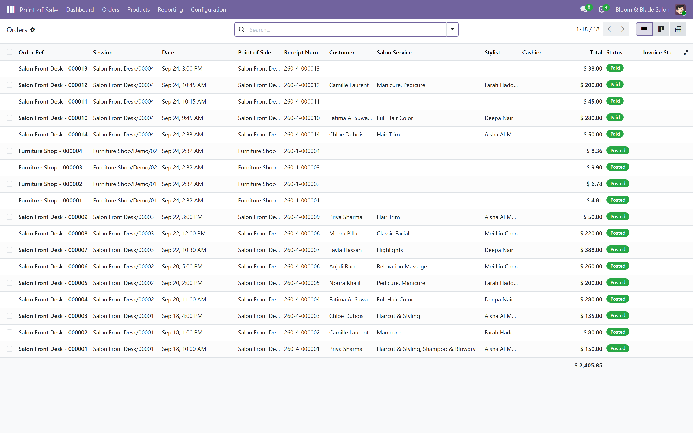
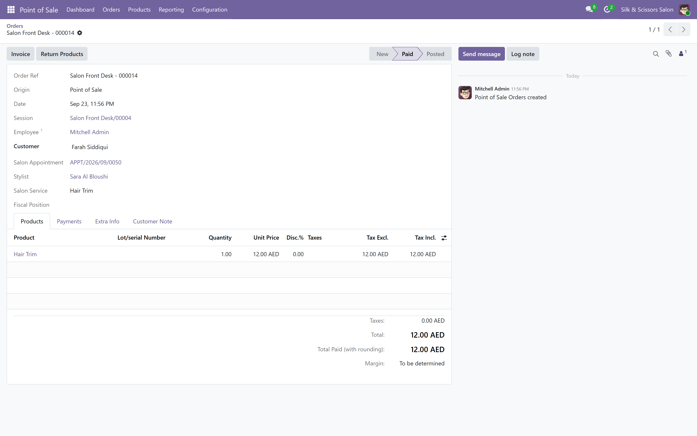
Where the stylist's commission comes from
Paying a salon order does more than take the money. It raises a real invoice for the appointment, registers the payment through Odoo's own payment register wizard so it appears correctly matched on the invoice, and runs WT Salon Management's own commission rules for the stylist who did the work. The result appears in that module's Commission Earnings list, against the stylist and the appointment.
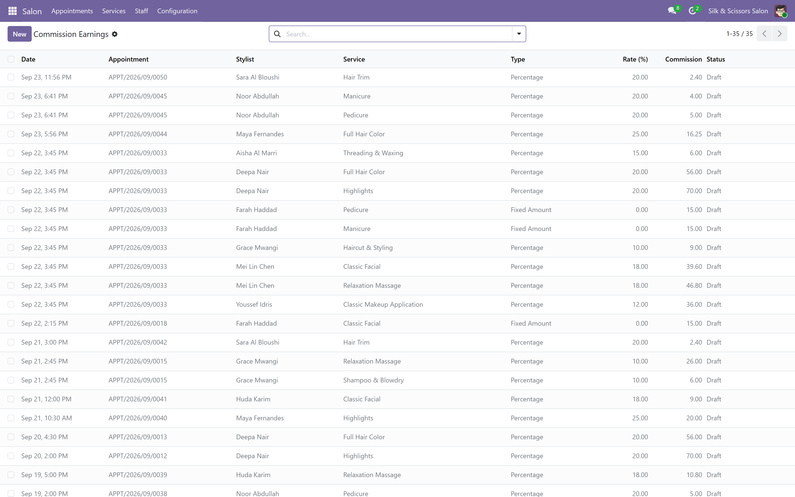
Who can actually use the Salon board
The Salon board runs on whatever access WT Salon Management already grants: Stylist, Receptionist or Manager.
- A cashier with only the standard Point of Sale group, and none of those three, cannot open the Salon board at all.
- A Stylist can see and update appointments, including their own, but that group carries no create right in WT Salon Management, so a Stylist working the till alone cannot book a new appointment or take a walk-in.
- A Receptionist or a Manager can do everything on the Salon board, including booking and walk-ins.
Give that member of staff the Receptionist or Manager role in WT Salon Management, not the Stylist role alone.
What this module does not do
Said plainly, so nothing here is a surprise after you buy it.
- No appointment calendar, service catalogue or stylist records of its own. All of that is WT Salon Management, a separate required module.
- No online booking for customers. Every booking is made by staff, from the till.
- No SMS or email appointment reminders.
- No payroll. Commission is calculated and shown in WT Salon Management's own reports; it is not paid out by this module.
- No stylist working hours calendar. The module will not refuse to book someone outside their normal hours.
- No double-booking guard of its own. Whatever conflict checking WT Salon Management enforces at the appointment level is what applies.